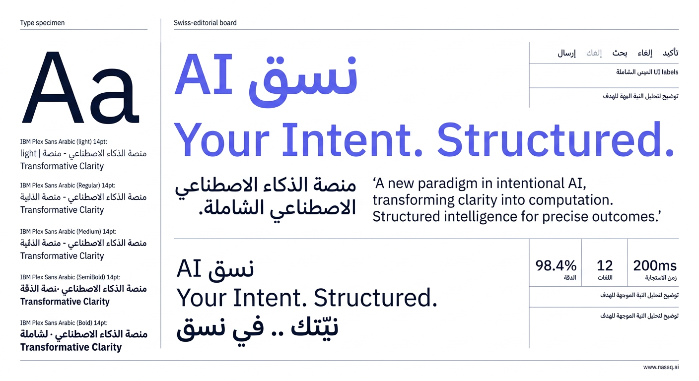
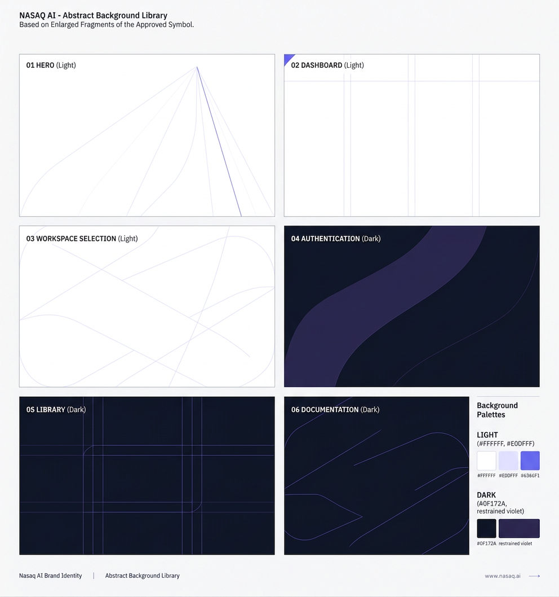
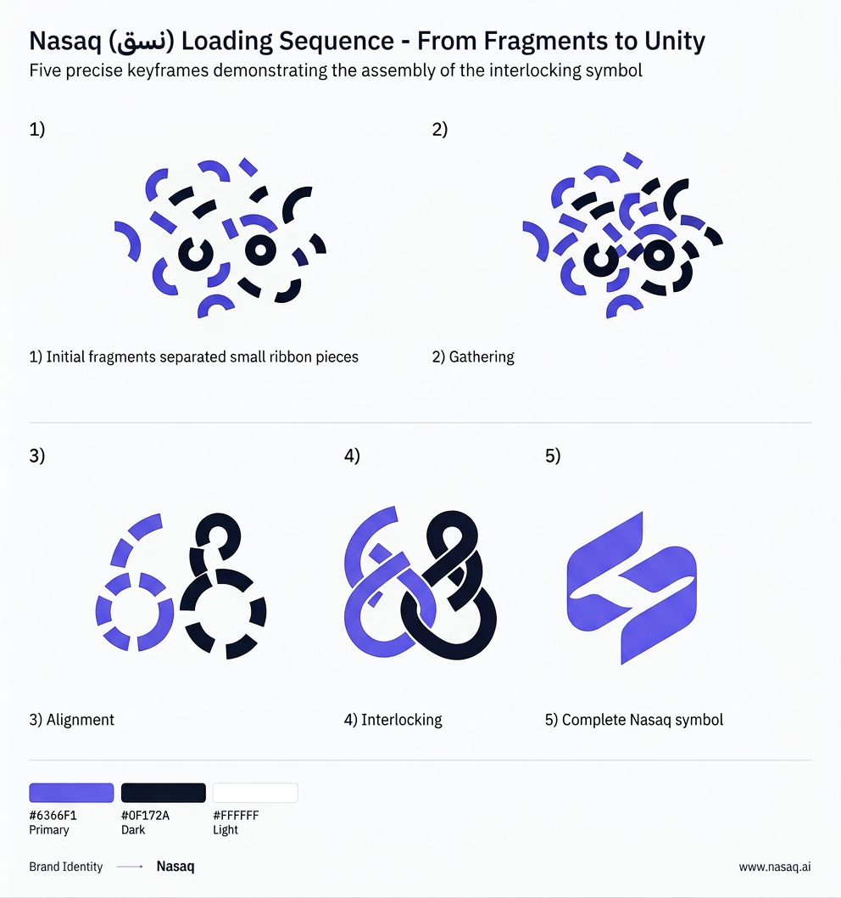
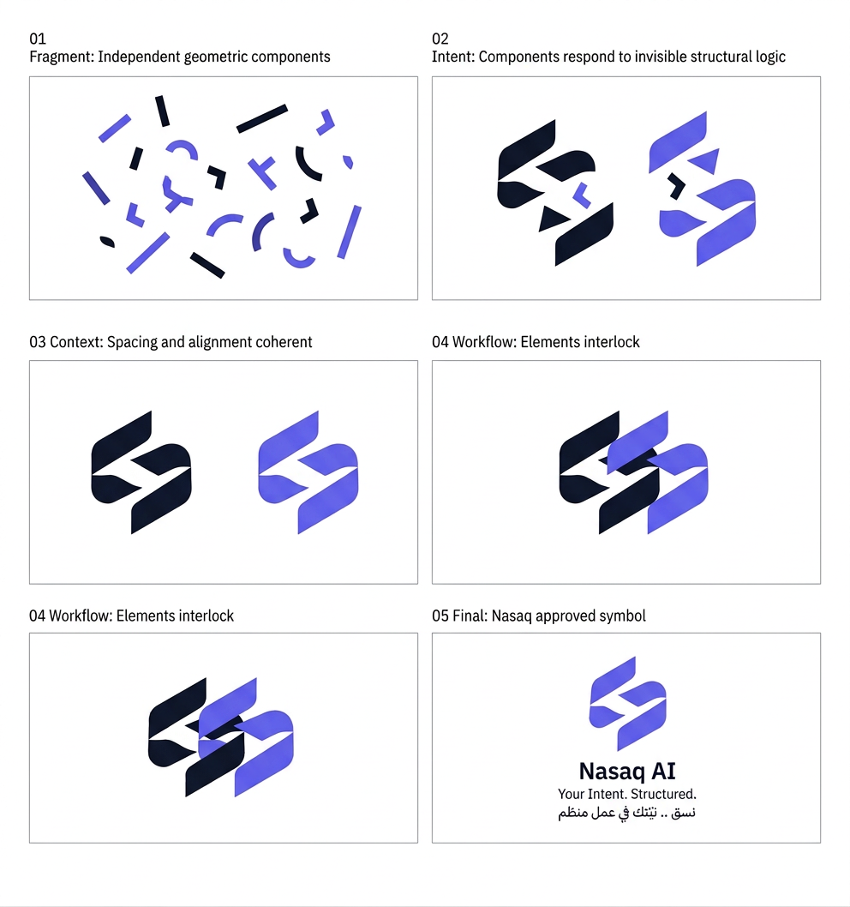
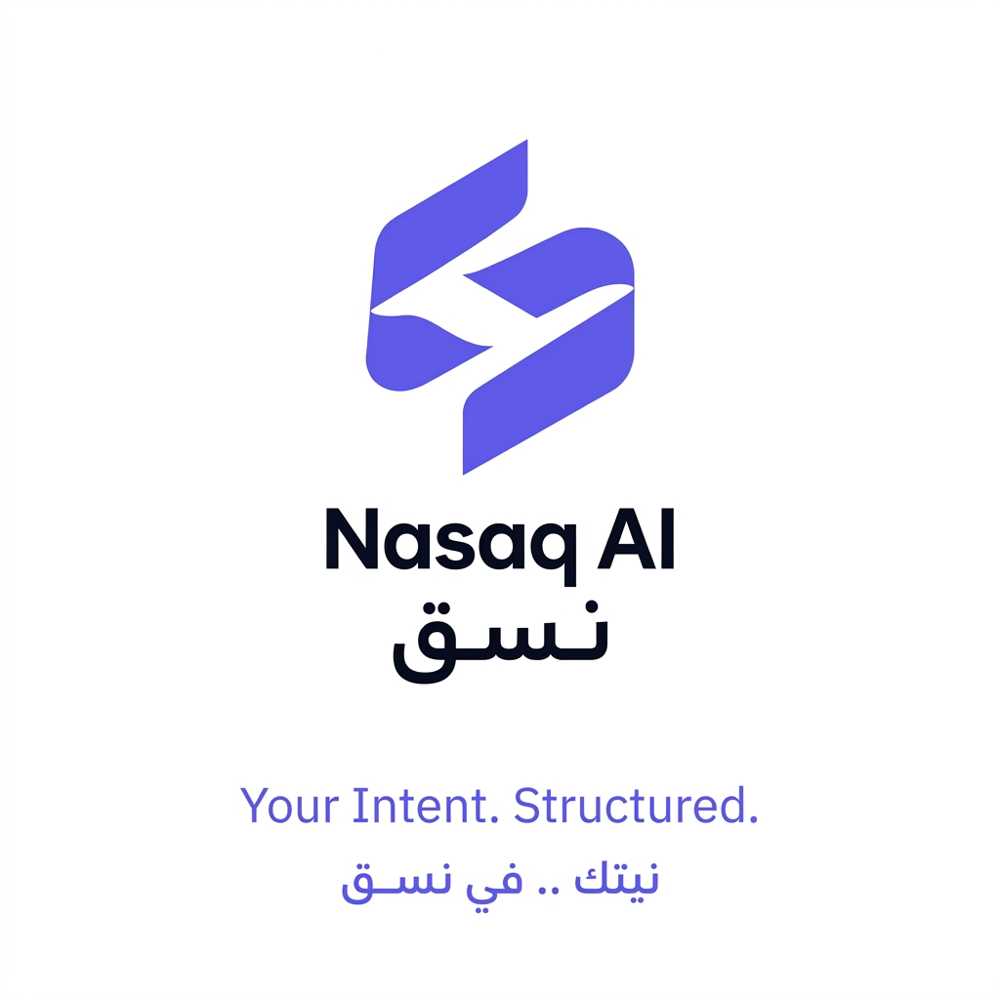
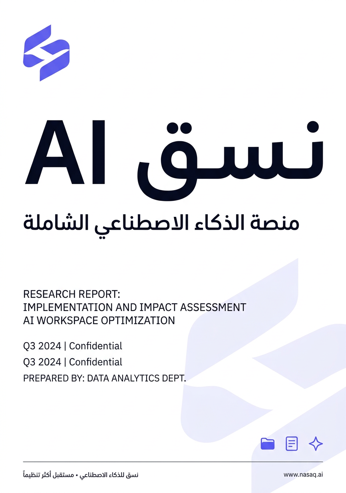
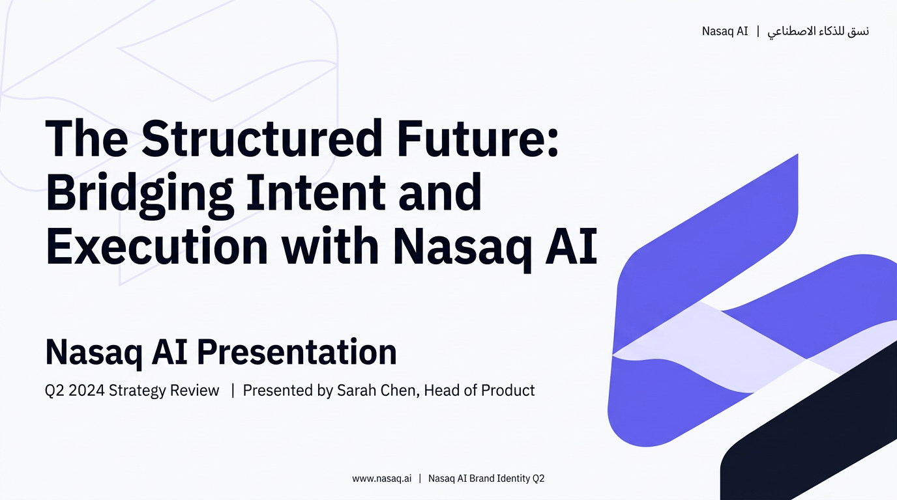
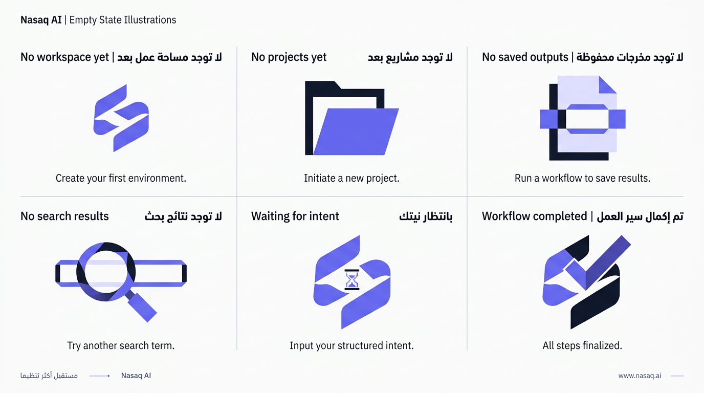

Nasaq AI نسق
20 ASSETS GENERATED
PRODUCTION READY
SVG CONVERTIBLE
NO AI CLICHÉS
Brand Identity Board
Approved Style
IBM Plex Sans Arabic
www.nasaq.ai
Approved Style
IBM Plex Sans Arabic
www.nasaq.ai














كل الأصول تم توليدها وفق دليل الهوية المعتمد: رمز الشريط المتداخل الهندسي المضغوط، الإيقاع القطري المتحكم، النهايات المستديرة الدقيقة، الفراغ السلبي القوي، التوازن البصري، التعقيد الداخلي المحدود. بدون كليشيهات AI. بدون دماغ، روبوت، شريحة، شبكة نقاط، فقاعة دردشة، مصباح، عصا سحرية، نجوم. أسلوب SaaS ممتاز، عربي أولاً، Swiss editorial هادئ ودقيق.